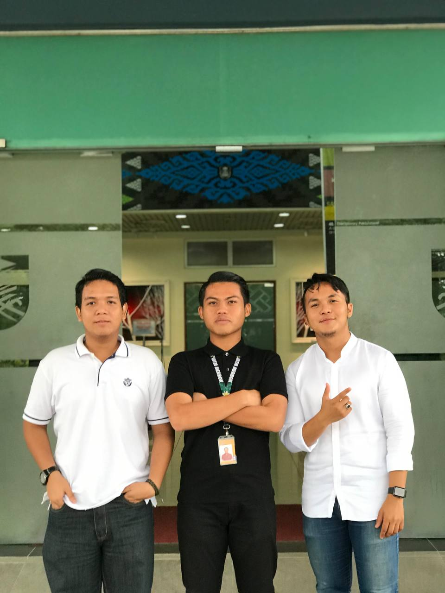

This website is for IMD311 Individual assingment


DIPLOMA IN INFORMATION MANAGEMENT
Univeristi Teknologi Mara (UiTM) Kedah Branch
After I finished my SPM 2017, I had been offered to further my study at Universiti Teknologi Mara (UiTM) Kedah Branch in Diploma Information Management. At the first point, I realized that I must sacrifice my old life which is spend time with my hometown friends and stay far from family. But when I already can adapt the new culture at the new place, I saw that I’m happy because of I can learn new things and it’s also taught me how to survive by own self. Nowadays, as we all known that we must face the new problem which is the Pandemic Covid-19 that affect all sector in our country. Unfortunately, we must adapt with new culture which is we must further our studies using online medium. So, we need to accept what was happen and try to find another effective ways to continue our diploma journey. “Alhamdulillah” now this is my last semester at UiTM Kedah Branch even the last three semester just using the online medium.
SEMESTER 1
SEMESTER 2
SEMESTER 3